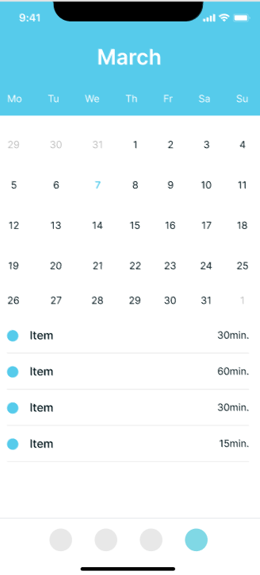
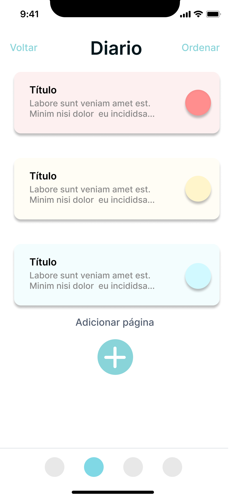
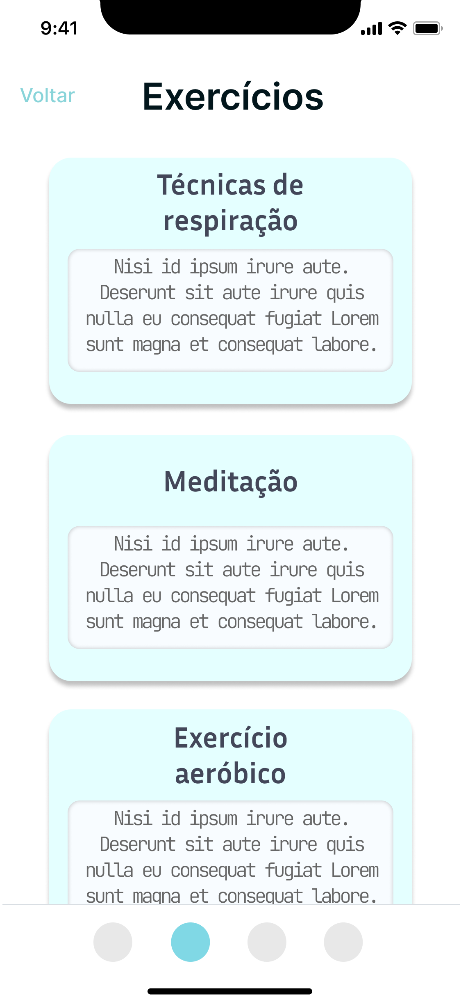
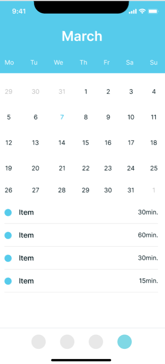
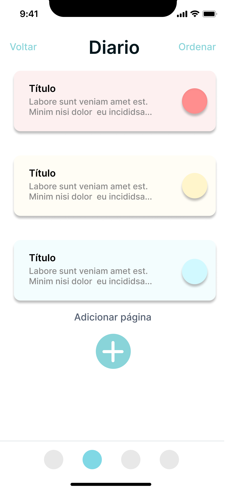
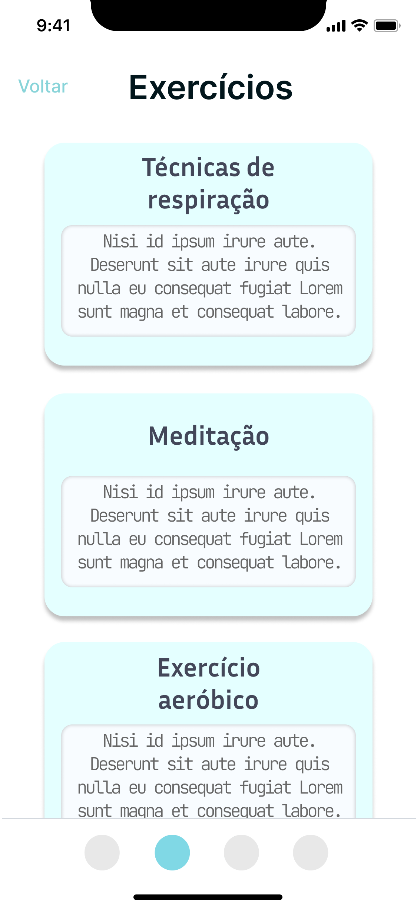

FLOWY
DESCUBRA O PODER DE SE CUIDAR
Bem-vindo(a) ao FLOWY — seu espaço de pausa e reconexão. Aqui começa sua jornada de bem-estar. A cada acesso, você encontra sugestões personalizadas para cuidar de si com leveza e propósito. Navegue por trilhas temáticas, receba lembretes gentis para respirar, refletir ou se movimentar, e explore conteúdos que inspiram e acolhem.


 





Sobre o Flowy
O Flowy nasceu para ser mais que um aplicativo: é um convite para desacelerar, respirar fundo e se reconectar consigo mesmo. Em meio à correria do dia a dia, queremos oferecer um espaço simples e acolhedor para o seu autocuidado.
Inspirados por conversas sobre saúde mental e filosofias como o minimalismo e mindfulness, criamos um app leve, intuitivo e bonito, que respeita seu ritmo e valoriza a simplicidade, autenticidade e presença.
- Acolhimento: respeitamos seu ritmo único.
- Simplicidade: interface limpa e sem distrações.
- Autenticidade: práticas reais e humanas.
- Constância gentil: celebramos sua presença, não a perfeição.
Exercícios
Os exercícios do Flowy foram pensados para acolher você em diferentes momentos do dia. São práticas simples, acessíveis e eficazes para promover bem-estar físico, emocional e mental.
Você pode escolher entre atividades energizantes, relaxantes ou reflexivas — tudo no seu ritmo, respeitando suas necessidades e seu tempo. O importante é se permitir cuidar de si com leveza e constância gentil.
- Movimento consciente: caminhada, corrida leve e alongamentos funcionais para liberar tensões e aumentar a disposição.
- Respiração e presença: meditação guiada, pausas conscientes e técnicas de relaxamento para restaurar o equilíbrio emocional.
- Escrita reflexiva: exercícios para expressar emoções, organizar pensamentos e cultivar autoconhecimento.
- Desafios semanais: pequenas metas com recompensas simbólicas que incentivam o engajamento com o autocuidado.